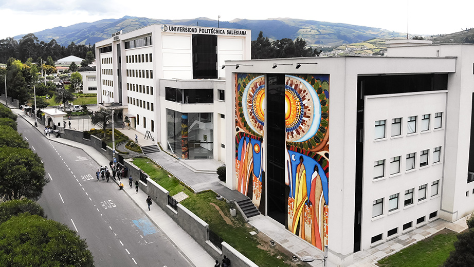

Datasense es un sistema de monitoreo para los niveles de luz y sonido del data center de la carrera de Ingeniería en Ciencias de Computación, sede Quito.
Somos un equipo dedicado a la monitorización de las condiciones operativas del data center de la carrera de Ingeniería en Ciencias de Computación, sede Quito. Nuestro objetivo es asegurar que el entorno del data center se mantenga dentro de los parámetros óptimos para un funcionamiento eficiente.
Supervisamos constantemente los niveles de luz y sonido en el Data Center para asegurar un entorno óptimo para los equipos.
Recopilamos y analizamos datos sobre el rendimiento del Data Center para identificar áreas de mejora y mantener la eficiencia operativa.
Buscamos implementar estrategias para optimizar el uso de recursos, garantizando una operación segura y económica del Data Center.